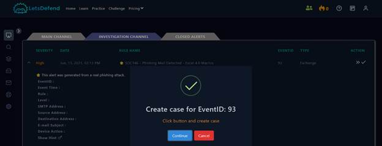
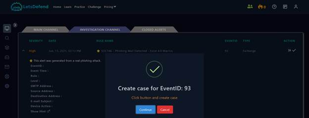
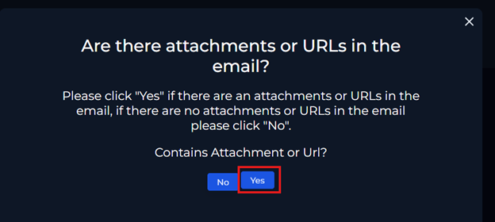
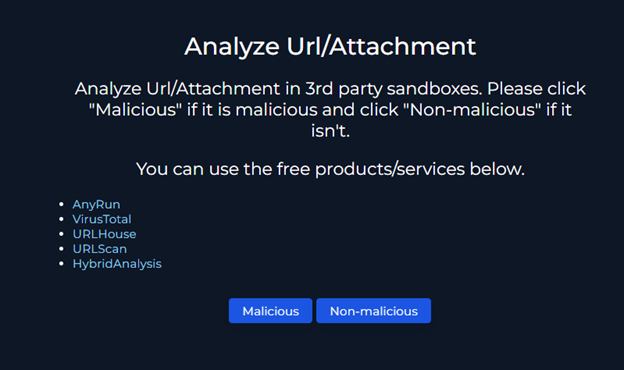
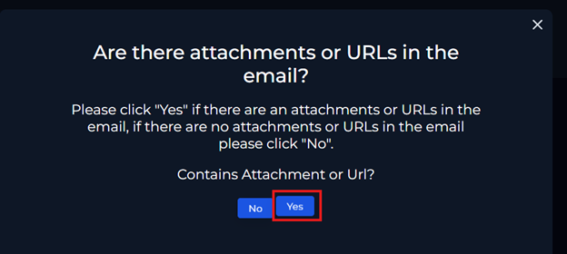
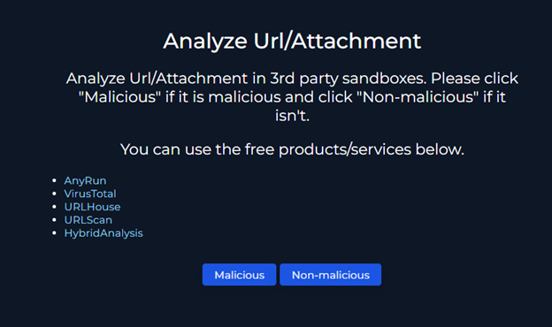
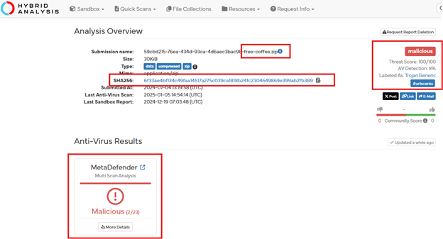
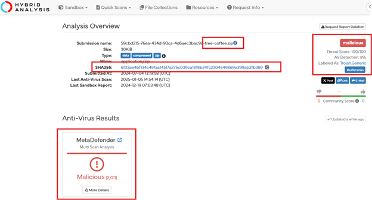
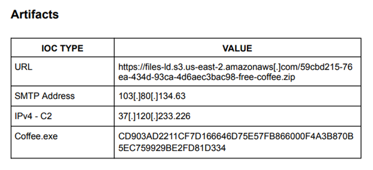
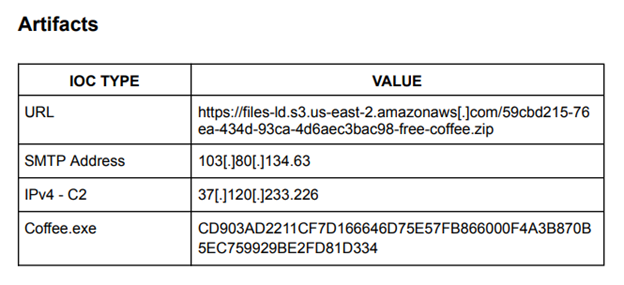

LetsDefend SIEM Lab: Phishing Alert – Deceptive Mail Detected
In this lab I worked as a SOC analyst in the LetsDefend platform, investigating a phishing
alert generated by a SIEM rule (SOC282 – Phishing Alert: Deceptive Mail Detected).
The goal was to analyse the email, identify malicious artifacts, confirm impact on the user,
and recommend appropriate containment and remediation actions.
Overview
A phishing email with the subject “Free Coffee Voucher” was delivered to a user (Felix) from
free@coffeeshoop.com. The SIEM raised an alert, but the email security product
showed the action as allowed, meaning the message reached the user’s inbox.
Acting as the analyst on duty, I took ownership of the ticket, followed the phishing playbook,
analysed the email content, URLs, and attachment, and confirmed that the campaign was malicious
and associated with AsyncRAT command-and-control activity.
- Type: Blue team / SOC investigation
- Focus: SIEM alert triage, phishing analysis, malware artefact review
- Platform: LetsDefend SOC simulation (SIEM & case management)
- Status: Completed – alert classified as True Positive
Objectives
- Investigate a SIEM-generated phishing alert in a simulated SOC environment.
- Apply a structured phishing playbook to ensure consistent incident handling.
- Analyse the email, URLs, and attachment to identify malicious behaviour and IOCs.
- Determine user impact, scope across the environment, and any C2 communication.
- Document findings, IOCs, and recommended remediation and awareness actions.
Environment & Tools
The investigation was conducted entirely within the LetsDefend blue-team training platform,
which simulates a SOC with alert queues, cases, and log visibility.
- Environment: LetsDefend SOC – Monitoring & Investigation channels
- Data sources: Email security alerts, endpoint logs, network logs
- Security tools: SIEM console, phishing playbook, log management views
- External analysis: VirusTotal, Hybrid Analysis, AnyRun, URLHaus, URLScan
Methodology
- Ticket triage: Reviewed the SOC ticket queue, filtered by severity, and took ownership
of the phishing alert.
- Case creation: Created and linked a case to track all investigative steps, findings,
and decisions.
- Playbook-driven workflow: Followed the phishing playbook to ensure each phase (email
parsing, URL/attachment analysis, impact assessment) was covered.
- Email analysis: Parsed headers, sender, recipient, timestamps, and observed the
suspicious attachment and “Free Coffee” lure.
- URL & attachment analysis: Extracted URLs and the ZIP attachment link, analysed
them using sandbox and threat intelligence tools.
- Endpoint and network review: Correlated endpoint activity, browser history, and network
logs for the victim host (Felix’s workstation at
172.16.20.151).
- Scope & C2 check: Verified whether other users received the same email and looked
for evidence of C2 communications in the environment.
- Reporting & closure: Documented IOCs, artefacts, and remediation recommendations,
then closed the alert as a True Positive.
Key Findings
-
The phishing email successfully bypassed automated blocking and was delivered to Felix,
increasing the risk of user interaction with the malicious content.
-
URL and file analysis confirmed the attachment as malicious, associated
with AsyncRAT, a remote access trojan used for full remote control of infected hosts.
-
Threat intelligence revealed multiple concerning capabilities, such as process manipulation, VM detection,
and outbound connections to a known malicious host (
37.120.233.226 on TCP/3451).
-
Log review showed no evidence of the email being delivered to other users, and no lateral spread beyond
Felix’s host.
-
The investigation highlighted the importance of user awareness, better email filtering, and improved
detection rules for phishing campaigns.
Skills Demonstrated
- SIEM
- SOC analysis
- Phishing investigation
- Log analysis
- Threat intelligence
- Incident response
- Playbook-driven workflow
Artifacts & IOCs
During the investigation, I collected and documented multiple indicators and technical artefacts,
which would be valuable for future detections and threat hunting.
- Sender:
free@coffeeshoop.com
- Malicious attachment URL:
https://files-ld.s3.us-east-2.amazonaws.com/59cbd215-76ea-434d-93ca-4d6aec3bac98-free-coffee.zip
- Malware family: AsyncRAT (remote access trojan)
- Suspicious IP:
37.120.233.226 (C2-related traffic)
- File hash (example SHA256):
6f33ae4bf134c49faa14517a275c039ca1818b24fc2304649869e399ab2fb389
Snapshots
Selected screenshots from the investigation show the SOC queue, case workflow,
and phishing playbook used to structure the response.
 



 




 



 
